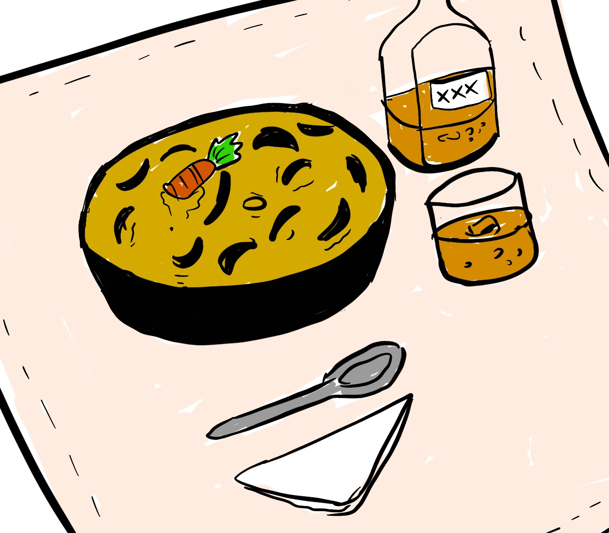

back to index
shell-less northeast egypt's armadillo nail soup

beautiful homemade food made from specific parts of everyone's favorite armadillo, a real delicacy.
ingredients
- the nails of an armadillo found in the outskirts of the egypt's northeast
- sea salt to taste
- two moldy garlic cloves
- one slice of chorizo
- three bigmacs
- an old dusty beer (preferably one found in an attic)
- one healthy carrot
steps
- throw salt, garlic cloves, carrot, one bigmac and the slices of chorizo on a pressure cooker
- in the cooker put two liters of sparkling water (not tap water, we trying to be healthy here)
- on a plate, place the nails and pour the beer over them
- grate the other bigmac over the nail, and gently stir with the carrot
- once done, throw the nails in the pressure cooker, and leave it there for about a hour
- think about your life in the shower meanwhile
- once ready, don't let it get cold, eat as soon as possible